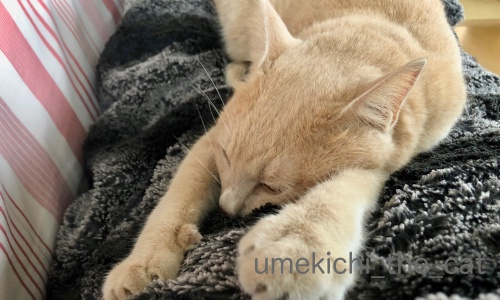
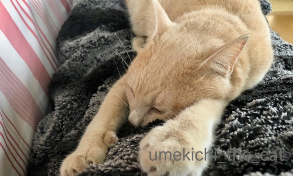

暴風雨の21号が過ぎて行きました [梅吉]
臨時更新です！
本日9月4日大阪上空を台風21号が通過して行きました。
おっとの会社は昨日の時点で全社員自宅待機の指示が。

朝8時半くらいは雲がたくさんありながらも晴れていたんですよ。
雲の中には嵐を予感させるようなものも！あの中にはラピュタが！？
梅吉は朝からテンション高く走り回っていました。
祖母が「嵐の前は猫が荒れる」とよく言っていたのですがそれ？
（こんな俗説聞いたことありますか？）
遊び相手（おっと）がいてハイテンションになっていただけ？？
空が暗くなり風が吹き始めたのは10時ぐらいから。雨も降り始めました。
学校、商業施設は休みのところが多く電車もほとんど止まっているので
外は不気味なほど静かです。

台風が近づいて来た午後1時半の風景。
晴れている時右手奥に見えていた大きなビルが見えなくなっています。

この頃はまだ余裕の梅吉w

ちゅうちゅうする余裕なんかもあったんですよw
そして3時頃の動画です。
（15秒です。バリバリ風の音が出ます。）
台風が接近中の雨風、台風の目の中での強風。
その後台風が去って行く時の暴風雨の動画です。
近くの神社の木がわさわさ揺れて生木が裂けています。
空には枯葉やビニール袋などが巻き上げられて風が一瞬やむと
わらわらと落ちてくるの繰り返しでした。
この時の突風は本当にすごくてマンションながら軽く家が揺れました。
窓ガラスが割れるんじゃないかという心配、人生で初めてしました。
この間３分間ほどの停電が２回ほど。
冷蔵庫＆冷凍庫の中の物どうしよう・・・と心配でたまりませんでした（笑）
（お酒のアテみたいのばっかり入っているから毎日宴会だな、とwww）
これには梅吉も固まりましたよ。
背中の毛が立っているのが分かるでしょうかwww

５時ごろには雨風もおさまって梅吉も窓に近寄って外を見る余裕も出来たみたい＾＾
ベランダにあちこちから飛んで来た枯葉やゴミが散乱しているのが気になるようです。

昼間はずっと緊張していたのか夜はいつも以上に眠そうでした。
可愛い後頭部がホッとしているように見えましたよ＾＾
ありがたいことに我が家はベランダの鉢が倒れたくらいで何も被害はありませんでした。
が、今日は一歩も家の外に出ていないので外がどうなっているのかはわかりません。
木が倒れたり大きな枝が散乱したりしていそうです。
暴風雨中はバリバリ金属製の音もしていたので建物の被害もあったかもしれません。
警察や消防が来た気配はないので大きな被害ではないと思いますが。
台風21号は関西圏を通過して行きましたが被害の全容はまだ把握できていないという感じです。
奈良＆和歌山の山間部は先日も被害を受けているので
予想以上の被害や二次被害が出ていないか心配です。
そして21号が今後進んでいく進路で被害がないように祈るばかりです。
本日9月4日大阪上空を台風21号が通過して行きました。
おっとの会社は昨日の時点で全社員自宅待機の指示が。
朝8時半くらいは雲がたくさんありながらも晴れていたんですよ。
雲の中には嵐を予感させるようなものも！あの中にはラピュタが！？
梅吉は朝からテンション高く走り回っていました。
祖母が「嵐の前は猫が荒れる」とよく言っていたのですがそれ？
（こんな俗説聞いたことありますか？）
遊び相手（おっと）がいてハイテンションになっていただけ？？
空が暗くなり風が吹き始めたのは10時ぐらいから。雨も降り始めました。
学校、商業施設は休みのところが多く電車もほとんど止まっているので
外は不気味なほど静かです。
台風が近づいて来た午後1時半の風景。
晴れている時右手奥に見えていた大きなビルが見えなくなっています。
この頃はまだ余裕の梅吉w

ちゅうちゅうする余裕なんかもあったんですよw
そして3時頃の動画です。
（15秒です。バリバリ風の音が出ます。）
台風が接近中の雨風、台風の目の中での強風。
その後台風が去って行く時の暴風雨の動画です。
近くの神社の木がわさわさ揺れて生木が裂けています。
空には枯葉やビニール袋などが巻き上げられて風が一瞬やむと
わらわらと落ちてくるの繰り返しでした。
この時の突風は本当にすごくてマンションながら軽く家が揺れました。
窓ガラスが割れるんじゃないかという心配、人生で初めてしました。
この間３分間ほどの停電が２回ほど。
冷蔵庫＆冷凍庫の中の物どうしよう・・・と心配でたまりませんでした（笑）
（お酒のアテみたいのばっかり入っているから毎日宴会だな、とwww）
これには梅吉も固まりましたよ。
背中の毛が立っているのが分かるでしょうかwww
５時ごろには雨風もおさまって梅吉も窓に近寄って外を見る余裕も出来たみたい＾＾
ベランダにあちこちから飛んで来た枯葉やゴミが散乱しているのが気になるようです。
昼間はずっと緊張していたのか夜はいつも以上に眠そうでした。
可愛い後頭部がホッとしているように見えましたよ＾＾
ありがたいことに我が家はベランダの鉢が倒れたくらいで何も被害はありませんでした。
が、今日は一歩も家の外に出ていないので外がどうなっているのかはわかりません。
木が倒れたり大きな枝が散乱したりしていそうです。
暴風雨中はバリバリ金属製の音もしていたので建物の被害もあったかもしれません。
警察や消防が来た気配はないので大きな被害ではないと思いますが。
台風21号は関西圏を通過して行きましたが被害の全容はまだ把握できていないという感じです。
奈良＆和歌山の山間部は先日も被害を受けているので
予想以上の被害や二次被害が出ていないか心配です。
そして21号が今後進んでいく進路で被害がないように祈るばかりです。

カフェオレ色の梅吉

梅吉 2023年8月10日 永眠


梅吉と出会った譲渡会

犬猫の理由なき殺処分ゼロ
妄想広告
UMEKICHI 光

爆発的に早い！
時々攻撃的！
Thanks to Mr.Boss365
爆発的に早い！
時々攻撃的！
Thanks to Mr.Boss365

我が家の南側は大きなマンションが何棟か建っていますが、
その空間をビデオのような木の葉やビニル袋が渦のように舞っていました。
怖い風でしたね。
近くの信号機はアチコチ向いているようです。
by kiki (2018-09-04 22:03)
ご無事とのことで何よりです。
梅吉さん、安堵の後姿ですね。^^)
by yes_hama (2018-09-04 22:30)
とりあえず御無事で何よりです(〃'∇'〃)
固まった姿と後ろ姿、可愛いです(^_^;)
by middrinn (2018-09-04 22:44)
関西では車が横転したり、屋根が飛ばされる映像も‥
動画の風の音すごい、大変ですね。
梅吉さんも緊張しますよね！
ほっとしている様子が可愛い～＾＾
こちらは台風からは離れているのに影響で雨風はあり、百日紅がだいぶ散りました。
by sana (2018-09-05 00:51)
大きな被害がなくて、良かったです(´▽｀)
動画、風の轟音がド迫力で、
怖かった～＾＾；
梅吉さんの毛も逆立つはずですね！
ホッとした後頭部、可愛すぎる～♡(*^^*)
by マーヤ (2018-09-05 02:12)
大きかったですねー＞＜
２２号の種も南の海に見つかっているみたい。
明け方、、お外に出て様子を見に…
うん突然振り出した豪雨と風。。。
引き続き警戒なのかなぁ…＞＜
by 猫毬 (2018-09-05 04:33)
「嵐の前は猫が荒れる」とは聞いたことがないですね。
ニャンよりワンの方が悪天候に敏感かと。
うちの子も不安だったようで
私の周りに集まって寝てましたね＾＾
by ぽちの輔 (2018-09-05 06:46)
梅吉さん、グッタリお疲れ様でした。
by ニコニコファイト (2018-09-05 07:11)
ニュースの画像を見てSF映画のような
恐怖を感じましたわ。
ご無事で何よりですー！
人間でも怖いんやから、にゃんこは
そりゃ固まりますよねー。。。
by よーちゃん (2018-09-05 07:48)
ご無事で何よりでした！！
梅吉さんも怖い思いをしましたね・・・
今朝のニュースで被害の大きさに驚きました。
これ以上、被害が出ないことを祈るばかりです！
by きぃ (2018-09-05 08:00)
梅吉さん 監視ごくろうさまでした。(^_^;)
by スイカが好き (2018-09-05 09:15)
おはようございます。
大きな被害なくて良かったですね！！
映像も樹木の揺れ方が凄いです。
梅吉君も大変な１日でしたが・・・
「家族水入らずで楽しまれた」と考えたいですね！！
後頭部の写真が絵になる梅吉君！！流石です！？(=^･ｪ･^=)
by Boss365 (2018-09-05 09:43)
大きな被害が無くて良かったです。
会社でテレビを観ていて、大阪の中継の時はドキドキしましたよ。
梅吉君もつかれたね^^
うちも昨日の夜はすごい強風で家が揺れてました。
あおは窓辺でチェック。うみはソファーでゴロ寝(笑)
by リュカ (2018-09-05 10:35)
風で実際に車が飛ぶのを初めて知りました。しかも日本で。
姉が大阪にいるんですが、テレビがチカチカして、停電二回した
と言ってました。ワンコもビビりまくりでベタベタくっついてきた
そうですよ。梅吉さんはちゃんと一人で見張り番してて、えらい！
by nachic (2018-09-05 12:24)
も～ホントに怖かったです。
トタン屋根や何かの看板が紙くずのように舞い上がって飛んでいく様子、あまりにスゴすぎて最初は現実感ありませんでした。
そのうち、窓ガラスが割れたらどうしようと思ったら恐怖ＭＡＸ。
梅吉さん、余裕ですね(^▽^;)
ウチのはずっとまんまる目のまま固まってました。
通勤路では木の枝や何かわからない物体があっちにもこっちにもゴロゴロ。報道されるのは関空ばかりですが、大阪南部ではもっと被害が出ているようで職場の人もお休みが多いです。
by ゆきち (2018-09-05 12:48)
わーー! これは怖かったでしょうねー。生木の裂ける音も入ってますね。こんな風の強い台風は見たことないです。うちも以前台風の通過で窓がミシミシいったことがあるのですが、マンションは雨戸がないのでガラスが割れないか心配です。ご無事で良かったです。
by zombiekong (2018-09-05 12:49)
ご無事で何よりです。
北海道も上陸は免れましたが、かなりの風雨でした。
やはり窓が割れないか心配になるほどだったので
そちらではどれだけ激しかったのかと思うと‥；；
梅吉さんもお疲れさまでした。
by 市丸 (2018-09-05 13:36)
灯台守のように、きりりとした表情で前を見つめている姿！きゃんわいい～♪
by Ginger (2018-09-05 13:52)
台風気になっていたの。
これは怖いよね。早く通り過ぎてって願うよね。
静かになってホッとして寝ている梅吉くんの可愛らしい後頭部を見て安心したよ～(*^-^*)
by emi (2018-09-05 14:49)
台風凄い風だったみたいですね！
車が飛ぶってどんな風って感じですよね。
無事で良かったですね。
by ma2ma2 (2018-09-05 16:54)
ちぃさん家も揺れたんですね(*_*)
台風の風でマンションが揺れるって
聞いたことがありませんでしたが、動画を見て
「こんなにすごい風だったら揺れるかも」と怖くなりました(*_*)
梅吉さんもお父さんとお母さんが一緒にいてくれたとはいえ
背中の毛を立てるほど警戒してお疲れ様でした(_ _)
本当にご無事で良かったです( ^ω^ )
by ニッキー (2018-09-05 18:19)
今年は尋常ではない暑さに加え、大きな台風が多かったですね。
（過去形にしたい・・・もうこないでほしい・・・）
マンションが揺れる・・・わかります。前の家がそうでした。。
ひとまずは、ちぃ家に大きな被害がなくて良かったです。
（宅配ピザの人が吹っ飛んだってネットで見ました。。）
窓ガラスが割れそうなくらいの勢い・・・
梅さまも怖かったでしょうね。
by Ja-Kou66 (2018-09-06 00:32)
北海道で震度6の地震が起こりました。
今朝TVを観て驚きました。
札幌の状況が映し出されていました。
ご家族の皆さん大丈夫ですか？
台風の後に酷いことです。
by kiki (2018-09-06 08:01)
kikiさん＞
ビニール袋はふわーっと独特な飛び方をするので
余裕のある時の梅吉がじーっと見てました。
新種のトリさんとでも思ったかな＾＾
ビニール袋は車のフロントグラスにでも張り付いたら怖いです。
ポイ捨てゴミも立派な凶器になるのでは
と思った今回の台風でした。
実家は幸い台風の影響は受けなかったようです。
朝３時過ぎの大きな揺れに飛び起きたそうです。
yes_hamaさん＞
ありがたいことに我が家付近は大きな被害はありませんでした。
守り神様、強力なのかも！
middrinnさん＞
家族全員無事に台風をやり過ごせました。
ご心配いただきありがとうございましたm(_ _)m
梅吉は！何をしてもかわいいのですっ♪
sanaさん＞
自転車が飛んでいくのを見たという人も。
でも、あの風を経験したものとしてはそれもあるだろうなと思いました。
突風時は風の音は「バンっ！」でしたから。
百日紅、sanaさんのコメントで気づきました！
台風後花は全て飛ばされたのか街中から彩が消えています・・・
マーヤさん＞
ありがとうございます！私もホッとしております。
風の轟音は突風だとこれの何倍もすごくて・・・・
私の髪も逆立っていたかもしれませんwww
猫毬さん＞
人生で経験した一番大きな台風でした。
もう結構生きてるのに・・・
台風シーズン中は気を抜けない日々が続きそうですね。
地震もいつ起きるかわからないし。
ぽちの輔さん＞
あらら・・・おばあちゃん限定の迷信だったのかしら。
おばあちゃんがルールブック、みたいな？(*>艸<)
ワンちゃんにはあの悪天候＆風の音は地獄の苦しみかも・・・
人間だったら１〜２時間MRIに入っているような感じでしょうか。
ニコニコファイトさん＞
すっかり神経をすり減らした梅吉でした。。。
よーちゃん＞
SFとサスペンス更にパニック映画をごちゃ混ぜにしたような状況でした (^_^;)
地震、雷、超大型台風と色々な自然現象を体験した梅吉３歳の夏、でしたw
きぃさん＞
全国ニュースは北海道の地震の話題で持ちきりですね・・・
大阪の話題は関空うんぬんしか言わなくなっちゃいましたw
関西近辺ではさらなる被害は出ていませんが
スーパーの棚に商品が供給されずスカスカになってきました。
物流状況が悪いみたいですよ。
スイカが好きさん＞
頑張って監視をしていましたよー！
「根を詰めちゃいけないよ」って言い聞かせていたのですが
頑張りすぎちゃったようですw
Boss365さん＞
梅吉を連れてテーマーパークのパニック系アトラクションに参加した
という感じでしょうか＾＾
家族がみんな家にいたからこそブログネタにする余裕があったのかも！！
リュカさん＞
我が家の周りの民家や建物は驚くほど被害がありませんでした。
100メートルくらい離れると結構な被害を受けている所もあるのに・・・
うちは結界の中！？
強風でマンションが揺れる、
タワマン規模のマンションで起きる話だと思ってました。
nachicさん＞
車も自転車も飛んでいたようです。
昔ハリケーンで車や牛が飛んでいく映画を見たことがあるのですが
まさか自分がそのような状況に置かれるとは・・・
お姉さまのお家も被害がなかったご様子＾＾
梅吉はベタベタくっついては来ませんでしたが
常に私の視界に入る位置をキープしていましたよw
(せめてもの自慢www）
ゆきちさん＞
地震、雷でかなり度胸がついたのでしょうか(^_^;)
思ったよりもずっと落ち着いていました。
流石に突風MAXの時は固まっていましたけど・・・
テレビは関空ネタがお気に入りのようですね。
もっと違うニュースを取り上げて欲しいと心底思いました。
今日スーパーに行ったら商品の欠品が多くて棚がスカスカ。
どうやら物流がうまく回っていないような。
こういうことこそニュースバリューがあると思うのですが
関空みたいな派手な見栄えがしないとダメなんでしょうねwww
zombiekongさん＞
そうそう！マンショって雨戸が付いてないんですよね・・・
私は雨戸のない北海道で育ったので雨戸ってなんか違和感あったのですが
この台風を経験した後では雨戸は必需品だなって思うようになりました。
市丸さん＞
北海道も強い風が吹いたようですね・・・
北海道は複層ガラスだったり二重窓だったりしますよね。
関西の家はそうじゃない窓がほとんどなので
マジで窓を突き破って何かが家に飛び込んで来そうですw
by ちぃ (2018-09-06 21:31)
Ginegerさん＞
灯台守であり我が家の水先案内人でもありまーす(^_－)☆
emiさん＞
足の早い台風だったのがせめてもの救いでした・・・
あんなのがゆっくりペースだったとしたら、考えるだけで恐ろしいです。
私も梅吉の後頭部に癒されましたよＯ(≧▽≦)Ｏ
ma2ma2さん＞
我が家の付近で車が飛ばなくて良かったです！
何事もなくてホッとしていますよー。
ニッキーさん＞
強風で揺れるのはタワマンクラスの建物だとばかり・・・
７階建ての我が家が揺れるなんて夢にも思っていませんでした。
梅吉は風が吹き始めた時は余裕だったので
全然ケアしていなかったのですが
フッと見ると固まっていて・・・笑っちゃいましたwww
Ja-Kou66さん＞
本当にこの先は災害には遠慮していただきたいです！
誰かが転んで風に流されている図、あれ宅配のお兄ちゃんでしたか・・・
あの台風で営業していて外に出ていたのが驚きです。
届けにいく所だっとしたら更に驚きですwwwww
我が家のマンションは雨戸がないんですが
自腹でつけても良いなと思うくらいの強風でした。
窓ガラス、弱くなっていないか心配です。。。
by ちぃ (2018-09-06 22:13)